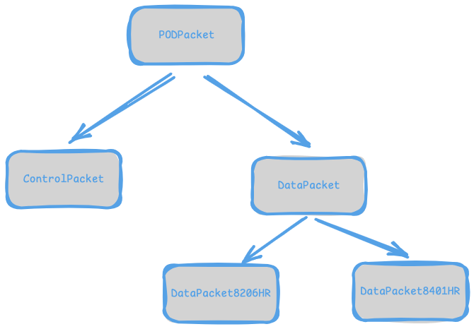

Low-Level Interaction with POD Systems 📊
This section of the documentation covers the low-level API provided Morelia that is used to read and write packets to POD devices. Using the three methods covered here, it is possible to take full advantage of every device Morelia has support for.
When to Use This API 🧐
Ideally, end-users should never have to interact with this, and it is primarily used by developers extending Morelia’s functionality to support new devices. However, since Morelia is still in early development, it may be necessary for everday users to use these methods to use specific functions of their device.
Eventually, the goal is to fully deprecate these methods as public and move them to fully private. However, for now, they are an option that can be utilized.
Packet Types 📦
The Morelia.packet subpackage contains several
types of packets that can be read/written to
POD devices. The class heirarchy of packets is as
follows:

ControlPacket is used to model POD packets
that are used to set up or configure the device
(e.g. setting the sample rate)
as DataPacket is used to model data that is recived from streaming
off of a data acquisition device. Each of these
packet classes has a host of attributes that can
be used to examine and analyze their contents.
In-depth documentation of these attributes for each class can be found
in the documentation for the Morelia.packet subpackage.
Writing and Reading Packets 📮
There are three methods Morelia uses to interact with devices:
ReadPODPacketWritePacketWriteRead
I will go over each of these breifly, but for in-depth documentation and coverage of all the parameters, please see the documentation for the Morelia.Devices.BasicPodProtocol.Pod class that defines these methods.
First, let’s cover ReadPODPacket. This method is used to,
as you might guess, read a packet off of a
device. This method returns an instantiation of a
subclass of the PodPacket
object contructed from the raw data of the first unread packet
in the buffer of the device being read from. It worth noting that
this method is blocking for a number of seconds specified by the
timeout_sec parameter.
Next is WritePacket. This method is used to write a ControlPacket to a device.
If you are looking to configure a device in a way not acessible through
the devices attributes, this method is your friend. In order to write
a packet, you will need two pieces of information: the command number
and payload. The command number is a unique number that identifies
a specific command for a given POD devices (for example, 104 identifies the SET TTL OUT command in an 8206HR). The command numbers
for each device can be found in the documentation for each respective
device on the command reference page.
Some commands require a payload, which are arguments passed to the device. WritePacket will optionally take these arguments as a tuple.
The payloads of each command are also detailed in the Morelia.Devices page for each device.
Finally, we have WriteRead. This method is a combination of
WritePacket and ReadPODPacket. Simply put, this method is simply
writes a ControlPacket to the device, and then immediately reads
the next available packet in the device’s buffer and returns the packet.
This method is especially for commands that return some sort of
response. For example, in an 8206HR, after a GET FILTER CONFIG
packet is sent, the device responds with packet that contains
the hardware filter configuration. Therefore, it makes sense to
immediately read next packet after a GET FILTER CONFIG control
packet is sent. Like ReadPODPacket,
this method is blocking for a number of seconds specified by the
timeout_sec parameter.
We will conclude this section with a small example. Though this only showcases a few specific commands on an 8206HR, it can be adapted to any command in the command reference.
# Import the proper class from Morelia.
from Morelia.Devices import Pod8206HR
# As always, the first step is to connect to our device.
# For this example, let's assume there is an 8206HR on /dev/ttyUSB0.
# Let's also sent the preamplifier gain to 10.
pod = Pod8206HR('/dev/ttyUSB0', 10)
# As our first example, let's set the lowpass filter on channel 2
# to 24 Hz. After consulting the command reference, we
# can see that the SET LOWPASS command is number 103 and
# takes two arguments: the channel number we want to set the filter
# for and the value we would like to set it to.
# We can also see that the SET LOWPASS command does not return any
# value, so there will be no response packet. Therefore, WritePacket
# is the right method for the job! If we were to use WriteRead, a
# a TimeoutError would be raised. This is because there is no
# response packet, si the device would time out when trying to read
# a packet from the 8206HR's buffer.
# Putting all of that together, we can set the lowpass filter value
# using the following method call.
pod.WritePacket(103, (1, 24))
# Next, let's verify that the lowpass value on channel 2 is what
# we expect. Consulting the command reference, we can see that the
# GET LOWPASS command (number 102) is what we are after. We
# can also see that it takes one argument (the channel we want the lowpass value of)
# and RETURNS the value of the lowpass filter on that channel.
# Since this command returns a value, that means the device will
# RESPOND with a packet containing the requested data after we send
# the GET LOWPASS command. We can handle this two ways, the first
# is to manually use WritePacket to write the command, and then
# read the response with ReadPODPacket. That looks like this:
# First, send the GET LOWPASS command.
pod.WritePacket(102, (1,))
# Next, we will read the response.
# After this, the variable lowpass_channel_2 will contain a
# ControlPacket object whose payload is the value of the lowpass
# filter on channel 2.
lowpass_channel_2_packet = pod.ReadPODPacket()
# As you might imagine, doing things this was with two method calls
# can get a bit cumbersome and make our code cluttered. Situations
# like this are exactly why we have WriteRead! Usinf WriteRead,
# we can use one method call to send the GET LOWPASS command
# and read the response. Let's see this alternative way of doing things.
lowpass_channel_2_packet = pod.WriteRead(102, (1,))
# Easy as pie! Now remember, both ReadPODPacket and WriteRead return
# instances of subclasses of PodPacket. In our case, these will be
# ControlPacket objects. If we look at the documentation for ControlPacket
# We can see that we can access a tuple of the values contained in
# the packet via the payload attribute. Since GET LOWPASS returns a
# single value, the tuple will contain only one attribute.
# Therefore, we can print the value the device has reported as the
# value set for channel 2's lowpass filter as follows.
lowpass_channel_2_packet_payload = lowpass_channel_2_packet.payload
print(lowpass_channel_2_packet_payload[0])
The Current Trouble with Streaming 😭
As a final note in this section, we need to talk about the low-level API and streaming. Due to current limitations within the API, you cannot use the low-level API while streaming from a device. Ideally, this will not be a limit in future versions, but for now any ControlPacket objects recieved during streaming will be discarded.
If you would like to use any commands during streaming, you must first stop any streaming, then issue your commands, and start streaming again afterwards.